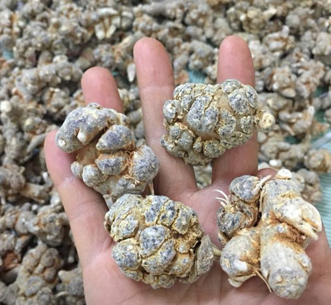
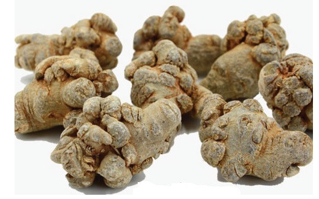
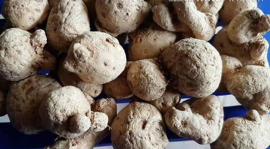

Tìm Hiểu Củ Tam Thất Có Mấy Loại Và Loại Nào Tốt Nhất?¶
Củ tam thất là một loại thảo dược lâu năm được khai thác và sử dụng để làm thuốc. Nằm dưới lòng đất, loại củ này đã hấp thu các tinh hoa, trải qua nhiều năm và mang lại giá trị tuyệt vời cho con người. Vậy bạn đã biết đến những công dụng đặc biệt cũng như củ tam thất có mấy loại chưa? Hãy theo dõi bài viết này để có thêm cho mình những thông tin cực kỳ bổ ích nhé!
Công dụng đặc biệt của củ tam thất¶
Trước khi biết được củ tam thất có mấy loại, bạn nên nắm rõ các công dụng đặc biệt của nó. Trong Đông y, củ tam thất được xem là loại thuốc vô cùng quý và thuộc nhóm chỉ huyết. Đây là loại củ có tác dụng cầm máu, giảm đau, bồi bổ khí huyết rất tốt.
Bạn có thể tham khảo qua một vài công dụng tuyệt vời mà củ tam thất mang lại: Tác dụng cầm và bổ máu: do có tác dụng cầm máu, tiêu máu, tiêu sưng tốt nên thường được dùng trong các trường hợp chảy máu do chấn thương, tiêu máu ứ…
Củ tam thất có tác dụng làm tiêu u, đặc biệt là các u lành tính. Do đó những người bị u có thể tìm đến củ tam thất để chế biến, sử dụng như một bài thuốc trị u hiệu quả.
Bảo vệ cho tim mạch và mạch não: trong tam thất có chứa chất noto ginsenosid có thể giúp ngăn ngừa xơ vữa động mạch, giúp cơ thể có thể chịu đựng tốt hơn khi bị thiếu oxy.
Giải tỏa stress, chống bị trầm uất, giúp phục hồi hệ thần kinh và tăng cường trí nhớ.
Phòng ngừa tai biến mạch máu não, làm tan đi các cục máu đông, giúp máu lưu thông tốt hơn.
Chống lão hóa: Trong củ tam thất có chứa hoạt tính saponin và flavonoid giúp chống lại các gốc tự do, chống oxy hóa, tốt trong việc trì hoãn lão hóa.
Phòng ngừa và điều trị ung thư: Saponin, Flavonoid có trong củ này có thể giúp hạn chế các tế bào ung thư phát triển; tăng cường đề kháng và trợ sức…
Điều hòa kinh nguyệt: Thành phần hoạt tính trong củ tam thất có tác dụng giúp điều hòa ổn định chu kỳ kinh nguyệt.
Củ tam thất có mấy loại?¶
Những thông tin dưới đây sẽ trả lời cho câu hỏi mà mọi người thường thắc mắc là “củ tam thất có mấy loại”? Hiện nay, củ tam thất được chia thành 3 loại sau đây:
Củ tam thất bắc¶
Tiêu đề, mô tả: Củ Tam Thất Có Mấy Loại Văn bản thay thế: Củ Tam Thất Có Mấy Loại Chú thích: Củ Tam Thất Có Mấy Loại
Củ tam thất bắc cũng có bề mặt củ sần sùi, trên đó có nhiều mấu nhỏ, thân củ có các vân trắng và có rãnh chìm cam nâu to nhỏ khác nhau. Nếu củ càng lâu năm thì kích thước của nó càng to và có càng nhiều mấu nhỏ.
Về màu sắc, vỏ của nó thường có màu xám. Bên trong ruột củ có màu trắng ngà giống như màu của ngà voi lâu năm. Củ tam thất bắc có vị đắng và nếu ngâm lâu thì hơi ngọt. Củ có tính nóng giúp bổ huyết, cầm máu tốt, phục hồi nhanh chóng các vết thương hở.
Củ tam thất nam¶
Tiêu đề, mô tả: Củ Tam Thất được phân loại như thế nào? Văn bản thay thế: Củ Tam Thất Có Mấy Loại Chú thích: Củ tam thất nam
Khác với củ tam thất bắc ở trên thì củ tam thất nam có hình dạng tròn hơn và không có nhiều mấu nhỏ. Trên thân có các vết lõm màu đen, có ít lằn nhỏ nhưng không tạo thành rãnh sâu.
Nói một cách tổng quát thì nó có bề mặt nhẵn hơn so với củ tam thất bắc, hình dạng 2 củ này có thể phân biệt rất rõ ràng.
Về màu sắc thì vỏ của củ có màu trắng ngà pha xám nhạt. Do thuộc họ gừng nên củ tam thất có tính nóng và có vị cay.
Củ tam thất hoang (rừng)¶

Tiêu đề, mô tả: Củ Tam Thất có công dụng gì? Văn bản thay thế: Củ Tam Thất Có Mấy Loại Chú thích: Củ tam thất rừng
Củ tam thất rừng có nhiều rễ mọc bao quanh, nó thường khá nhỏ nhưng dài. Do mọc hoang trên rừng nên hình dạng các loại củ sẽ khác nhau hoàn toàn.
Về màu sắc, những củ non thường có màu vàng nâu pha xanh. Những củ lâu năm sẽ có màu sẫm và trong ruột có màu xám. Về dược tính thì củ này có vị đắng hơn nhiều so với những củ tam thất được trồng. Những củ mọc lâu năm thì có vị càng đắng.
Với những phân tích trên thì bạn đã nắm được củ tam thất có mấy loại rồi phải không?
Củ tam thất loại nào tốt nhất?¶
Tam thất tốt thường sẽ có ở các tỉnh vùng núi phía bắc như ở Lào Cai, Hà Giang, Yên Bái… Tuy nhiên, loại củ tam thất chuẩn nhất vẫn là ở Hà Giang, nơi khí hậu rất thuận lợi để cây tam thất có thể phát triển mạnh. Do vậy mà tam thất bắc chính là loại tam thất được đánh giá là có giá trị nhất.
Nên lựa những củ tam thất chắc thịt, ruột màu xám xanh và không có các vết nứt xốp. Củ Tam thất loại tốt có khối lượng từ 6 – 8 củ /lạng, những loại trung bình là từ 9 – 15 củ/lạng, loại trên 19 củ/lạng là những loại kém hơn.
Nên lựa những loại ruột có màu xanh nhạt ngả vàng, thịt cứng như đá chứ không nên mua những củ dễ cắn, xốp hoặc dùng dao có thể cắt được.

>>>Tham Khảo Thêm: củ tam thất chữa những bệnh gì Bà bầu có ăn được tam thất không?
Giá các loại tam thất hiện nay¶
Ngoài việc thắc mắc củ tam thất có mấy loại thì người ta còn thắc mắc về giá cả của nó. Giá của các loại tam thất được phân trên các tiêu chí như chủng loại, nguồn gốc, chất lượng, kích thước, năm tuổi. Ban có thể tham khảo một số giá của các loại củ tam thất dưới đây:
Đối với củ tam thất nam, sẽ có giá từ 270.000 – 360.000 VNĐ/1 kg. Giá bán này còn tùy vào chất lượng, đơn vị bán.
Đối với củ tam thất bắc: sẽ có giá khoảng từ 500.000 VNĐ – 2 triệu đồng/1kg. Trong đó, phổ biến nhất là sẽ phân giá theo tiêu chí kích thước, như sau:
Tam thất bắc tươi: Từ 800.000 VNĐ/ 1kg.
Củ tam thất bắc loại 90 củ 1kg khoảng 1,2 triệu đồng/1kg.
Khoảng 1,4 triệu đồng/1kg với loại 60 củ 1kg
Khoảng 1,5 triệu đồng/1kg với loại 50 củ 1kg.
Đối với củ tam thất rừng: Loại này thường có giá rất đắt vì nếu tam thất mọc hoang đủ tuổi thường rất hiếm. Giá cho mỗi kg trên thị trường hiện nay sẽ không dưới 5 triệu đồng.
Cách dùng các loại tam thất hiệu quả¶
Ngoài chia sẻ về củ tam thất có mấy loại thì bài viết này cũng sẽ chia sẻ đến bạn cách để sử dụng các loại củ tam thất, cụ thể:
Cách sử dụng tam thất rừng¶

Tiêu đề, mô tả: Cách dùng các loại tam thất hiệu quả Văn bản thay thế: Củ Tam Thất Có Mấy Loại Chú thích: Củ Tam Thất Có Mấy Loại
Đối với loại này, để sử dụng cần rửa sạch đất bằng nước sau đó phơi khô và bảo quản nơi thoáng mát để có thể dùng được lâu hơn. Nếu muốn dùng tươi thì có thể dùng để ngâm rượu hoặc gà hầm còn với củ khô thì có thể tán mịn và thêm vào thức ăn hoặc pha nước, bài thuốc để dùng. Cũng có thể pha với mật ong để dễ uống hơn.
Cách sử dụng tam thất bắc¶
Ta có thể tán thành bột và pha nước sôi hoặc dùng mật ong rừng nguyên chất cho dễ uống với. Đối với củ tươi thì có thể thái lát và hầm với gà ác hoặc dùng ngâm rượu như củ tam thất rừng ở trên. Dùng tam thất đều đặn sẽ giúp hoạt động hệ tim mạch tốt hơn, chống đau đầu, chảy máu dạ dày, mỏi mệt.
Cách sử dụng tam thất nam¶

Tiêu đề, mô tả: Cách dùng các loại tam thất Văn bản thay thế: Củ Tam Thất Có Mấy Loại Chú thích: Tán củ tam thất nam thành bột để uống
Rửa sạch và phơi khô, tán thành bột để uống. Những người bị ứ tắc khí huyết thì nên sử dụng vì củ này có công dụng làm thông thoáng huyết mạch. Củ này chống chỉ định với những người chảy máu trong bởi nó có tác dụng làm mạch máu lưu thông nhiều hơn. Phụ nữ có thai và những người bị tiêu chảy cũng không nên sử dụng.
Để có thể sử dụng hiệu quả tốt củ này thì nên tham khảo ý kiến của bác sĩ. Từ đó dùng với chế độ hợp lý và không nên uống quá nhiều. Tuy có nhiều công dụng tuyệt vời cho sức khỏe nhưng củ tam thất cũng cần dùng điều độ, mỗi lần có thể dùng 1-3 muỗng cafe tùy theo sức khỏe mỗi người.
Vậy là Thảo mộc HHT đã giới thiệu đến bạn những công dụng tuyệt vời của củ tam thất cũng như giải đáp thắc mắc: “củ tam thất có mấy loại?”. Hãy đọc và chia sẻ bài viết này để có thêm nhiều người biết cách sử dụng loại củ này nhé!
>>> Xem ngay: Củ Tam Thất Dùng Như Thế Nào Để Đạt Hiệu Quả Tốt Nhất
Video: Tam thất ngâm mật ong¶
Mete Title: Củ Tam Thất Có Mấy Loại Bạn Đã Biết Chưa?
Meta Description: Củ tam thất là một loại thảo dược lâu năm sử dụng để làm thuốc. Vậy bạn đã biết đến những công dụng đặc biệt cũng như củ tam thất có mấy loại chưa?
Note
Liên hệ Thảo mộc HHT - Điện thoại: 0964.421.551
.jpg)